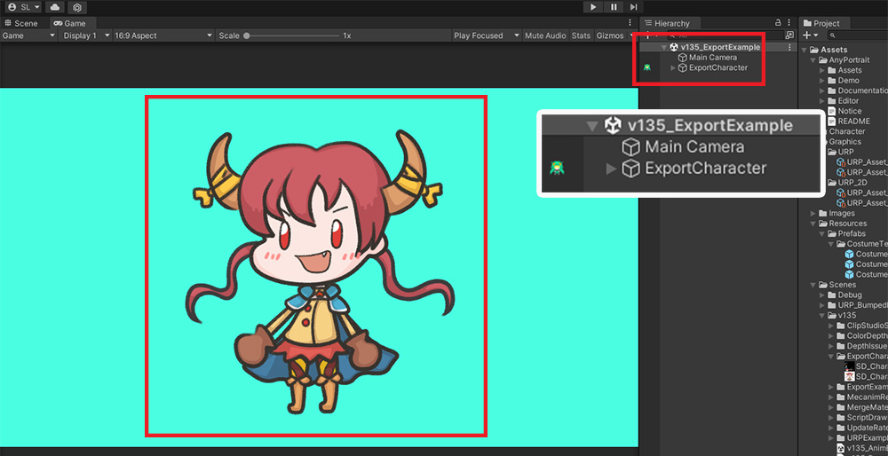
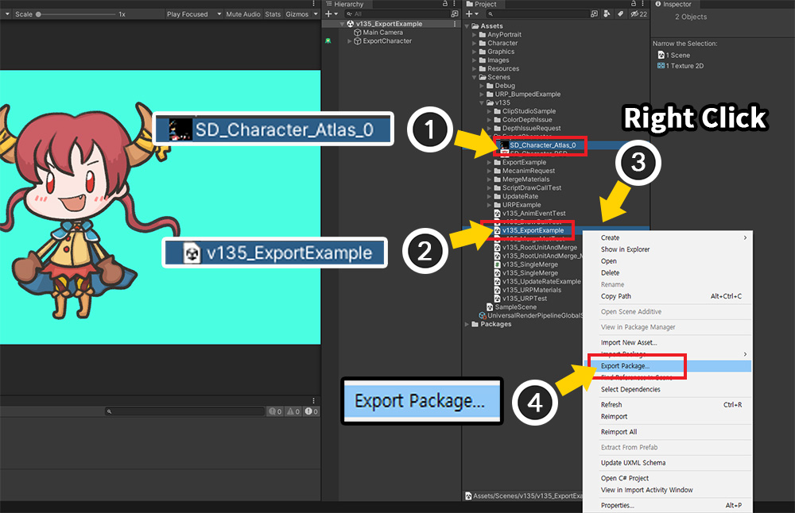
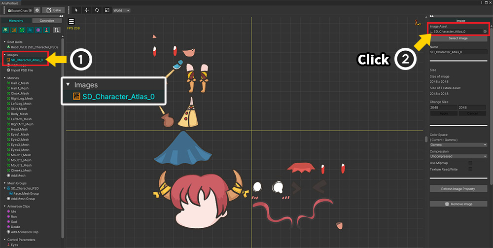
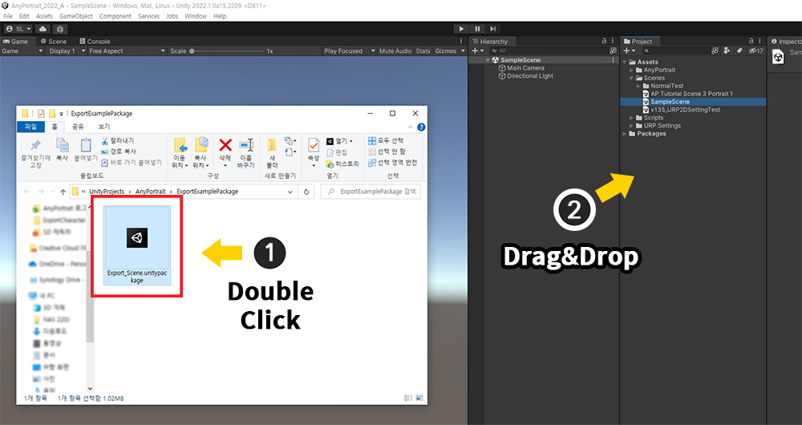
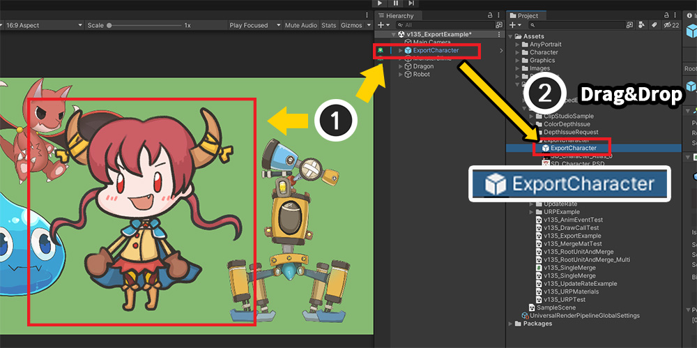
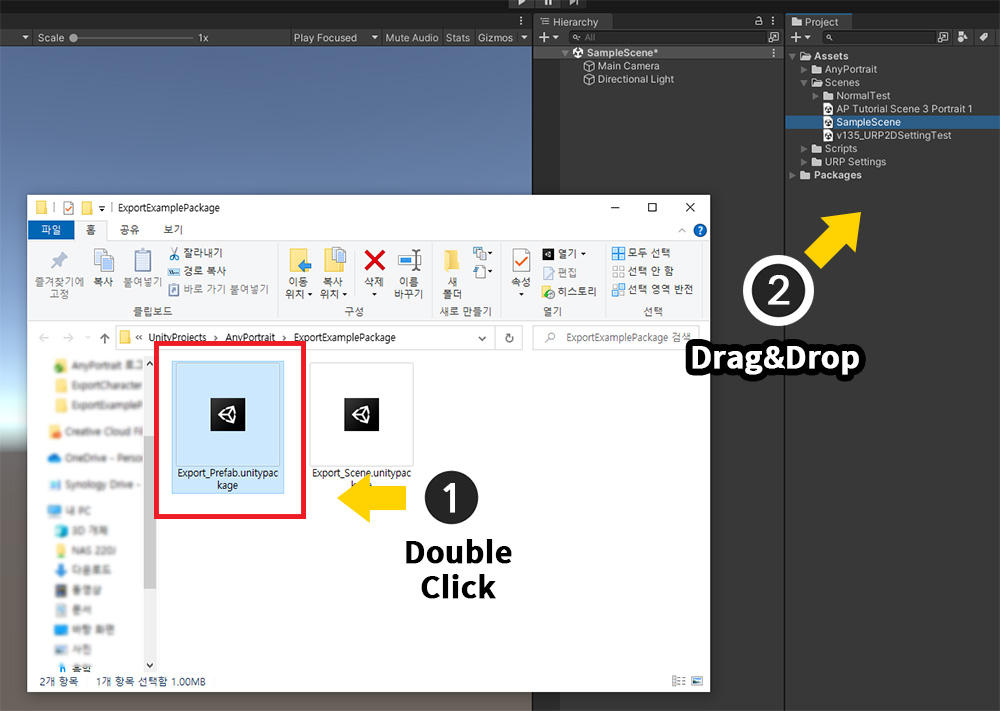
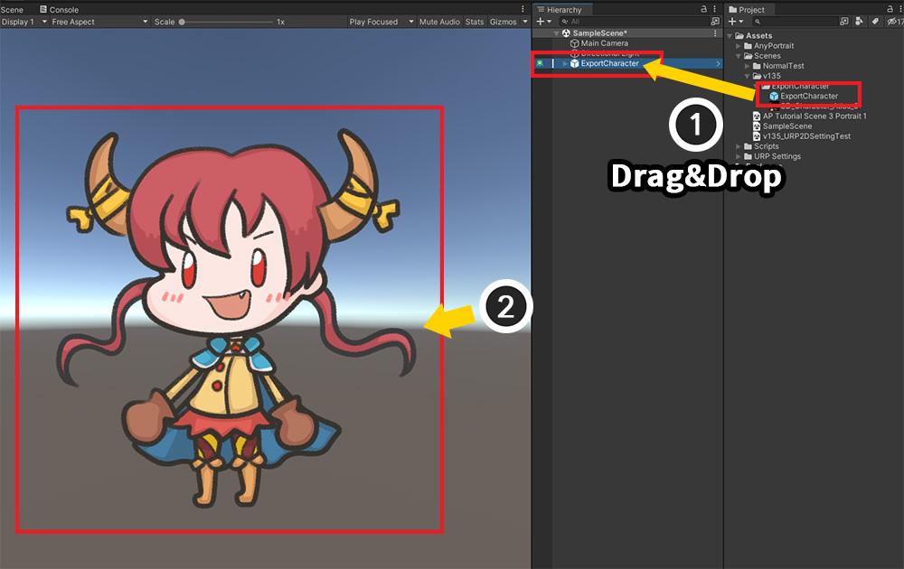

AnyPortrait > マニュアル > 別のプロジェクトにエクスポート
別のプロジェクトにエクスポート
1.0.0
Unityで作業した結果を別のプロジェクトにコピーしたい経験がありますか？
Unityの最新バージョンをテストしたい場合や、他のプロジェクトとリソースを共有するなど、さまざまな理由でデータをコピーしたい場合があります。
ただし、Unityのアセットファイルをそのままコピーすると、データの関連付けが解除され、正しく動作しなくなる可能性があります。
また、「AnyPortrait」のように、「シーン（Scene）」にデータが保存されているアセットは、別のファイルが存在しないため、コピーするのが難しいです。
このページでは、AnyPortraitのキャラクターを別のプロジェクトにコピーする2つの方法を紹介します。
これは、AnyPortraitだけでなく、ほとんどのUnityアセットやプラグインにも使用できる方法です。
また、バグや問題を解決するためにワークを私たちのチームに送っても、このページで紹介する方法が役に立ちます。
AnyPortraitの「バックアップ」（関連ページ）を使用して他のプロジェクトにエクスポートすることができます。
ただし、バックアップ機能は回復の目的を持つ機能であるため、他のコンポーネントなどに関連する設定はコピーされません。
したがって、可能であれば、このページで紹介する方法を活用してください。
シーンをエクスポート

AnyPortraitで制作されたキャラクターはUnityのシーンに保存されます。
デフォルトでは、キャラクターは別のファイルとして存在しないため、シーンファイル（.scene）をコピーするのが一般的です。
準備されたシーンは上記のように構成されています。

エクスポートしたいキャラクターにはいくつかのアニメーションがあります。
それでは、このキャラクターを別のプロジェクトにエクスポートしましょう。

(1) キャラクターで使用中の「Texture Asset」を選択します。
(2) 「Ctrl」キーを押しながらエクスポートする「Unityシーン（.scene）」を選択します。
(3) エクスポートする対象がすべて選択された状態で「Project UI」で「右クリック」を行います。
(4) 「Export Package」メニューをクリックします。
追加
キャラクターがMecanimやアニメーションクリップなどの他のアセットと連動して動作する場合は、そのアセットも一緒に選択してください。

「Exporting package」ダイアログが表示されます。
(1) 「Include dependencies」オプションを無効にします。 （このオプションをオンにすると、選択したオブジェクトに関連するすべてのスクリプトが保存されます。）
(2) 選択したオブジェクトがリストに表示されます。
(3) 「Export」ボタンを押して、適切な場所に「Unity Packageファイル（.unitypackage）」を保存します。

キャラクターの「Texture Asset」を見つけるのが難しい場合、
(1) AnyPortraitエディタで画像を選択します。
(2) 画像で使用中の「Texture Asset」項目をクリックしてください。
Unity Editorで対応する「Texture Asset」がハイライトされ、検索が簡単になります。
シーンのインポート

保存したシーンファイルを新しいプロジェクトにインポートしましょう。
（新しいプロジェクトには同じバージョンのAnyPortraitがインストールされている必要があります。）
(1) 保存した「Unity Package」ファイルを「ダブルクリック」または (2) プロジェクトに「ドラッグ」します。

「Unity Package」ファイルをインポートするためのダイアログが開きます。
(1) シーンと画像が保存されていることがわかります。 すべて選択してください。
(2) 「Import」ボタンを押します。

(1) シーンと画像（Texture Asset）が現在のプロジェクトにコピーされます。
(2) インポートしたシーンを選択すると、キャラクターが正常にコピーされたことがわかります。

AnyPortraitで開いてみると、データが破損することがなく、引き続き編集して利用できます。
「Prefab」をエクスポートしてインポート

上記のようにコピーするキャラクターだけでなく、他のオブジェクトがシーンに多く配置されている場合には、シーンを丸ごとエクスポートすることは困難です。
新しい空のシーンを同じプロジェクトに作成してキャラクターをコピー（ Ctrl+C, V ）した後、そのシーンをエクスポートすることもできます。
しかし、この場合は、「Prefab」を利用してみるのも良いでしょう。

(1) コピーしたいキャラクターを「Hierarchy UI」で選択します。
(2) キャラクターを「Project UI」に「ドラッグ」して「Prefab」に変換します。
キャラクターを「Prefab」にした場合、このキャラクターは独立したファイルとして存在します。
単にこの「Prefab」ファイルを別のプロジェクトにそのままコピーするだけです。
実際、AnyPortraitの内部データは破損なくコピーされます。
ただし、「Prefab」だけをコピーしてしまうと、「Texture」などの他のアセットとの接続が失われるため、適切ではありません。
そのため、ここでも「Unity Package」を利用します。

エクスポートプロセスはほぼ同じです。
(1) キャラクターの「Prefab」と (2) 「Texture Asset」を一緒に選択します。
（同じようにエクスポートする他のアセットもこのとき一緒に選択してください。）
(3) 右クリックメニューから「Export Package」を選択します。

(1) 「Include dependencies」を解除します。
(2) 「Prefab」と「Texture Asset」がリストに表示されます。
(3) 「Export」ボタンを押して「Unity Package」ファイルを保存します。

新しいプロジェクトを開きます。 同様に、同じバージョンの「AnyPortrait」がインストールされている必要があります。
(1) 保存した「Unity Package」ファイルを「ダブルクリック」するか、 (2) プロジェクトに「ドラッグ」します。

(1) 現在のプロジェクトにインポートする「Prefab」と「Texture Asset」がリストに表示されます。
(2) 「Import」ボタンを押します。

(1) キャラクターの「Prefab」と「Texture Asset」が正常にコピーされました。
(2) ところで今回はシーンをコピーしたわけではないので、まだキャラクターを見ることができません。

(1) 「Prefab」をドラッグしてシーンに配置します。
(2) キャラクターをシーンビューで確認できます。
キャラクタが見えない場合は、キャラクタを選択して「Inspector」で「Refresh Meshes」ボタンを押すだけです。

ここでの問題は、AnyPortraitは「Prefab」状態での編集を許可しないことです。
キャラクターを編集するためにAnyPortraitエディタを開くと、上記のようなメッセージが表示されます。
「Okay」ボタンを押します。

これで「Prefab」との接続が解除され、編集できる状態になります。
「Prefab」を利用した書き出し方法でも、キャラクターデータが正常にコピーされることがわかります。

編集を終えて「Bake」を実行し、Unityシーンに戻ります。
(1) キャラクターを選択します。
(2) 「Inspector」に「Prefab」に関するUIが追加されていることがわかります。
「Prefab」との接続を再度維持または解除する機能です。
「Prefab」の詳細については、関連ページをご覧ください。